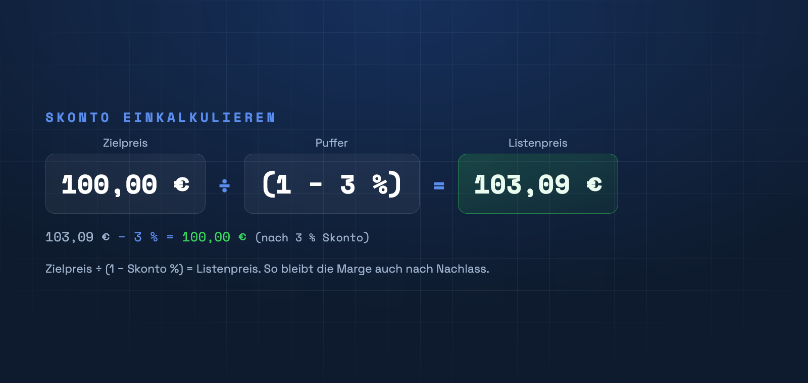

Wer Skonto oder Rabatte gewährt, verschenkt Marge – es sei denn, er hat sie vorher einkalkuliert. Mit einem kleinen Puffer bleibt dein Zielpreis auch nach Nachlass erhalten.

Das Problem mit Nachlässen
Gibst du 3 % Skonto auf einen Preis, der schon knapp kalkuliert ist, geht der Nachlass direkt von deiner Marge ab. Bei kleinen Margen kann das den Gewinn komplett auffressen.
Die Lösung: ein Puffer
Kalkuliere den Nachlass vorab ein, indem du deinen Zielpreis durch (1 − Nachlass) teilst: Listenpreis = Zielpreis ÷ (1 − Skonto %). Beispiel: 100 € ÷ (1 − 3 %) = 103,09 €. Nach 3 % Skonto landest du wieder bei deinen 100 €.
Puffer für mehrere Nachlässe
Gewährst du Skonto und Mengenrabatt, rechne beide Puffer ein. Wichtig: Der Puffer gehört in die Kalkulation vor der Mehrwertsteuer – als eigene Stufe zwischen Bar- und Nettopreis.
Puffer als eigene Stufe
Die 5-stufige Kalkulation von PriceCalc Pro enthält einen eigenen Puffer für Skonto und Rabatte – so bleibt deine Marge auch nach Nachlass stabil.
PriceCalc Pro ansehen →